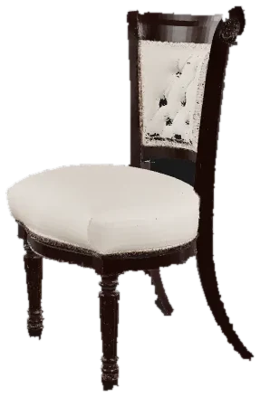
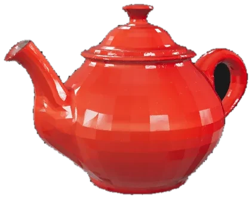
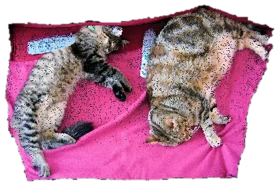

의자 · TRELLIS.2
사진에서 배경을 떼어 내고 360° 메시를 만듭니다. 삼각형 20만 개와 2048px 텍스처가 기본값입니다.


사진 한 장을 올리면 빙글빙글 돌려 볼 수 있는 3D 모델로 만들어 주는 도구입니다. 인물·물건도, 방 같은 공간도 됩니다.



사진에서 배경을 떼어 내고 360° 메시를 만듭니다. 삼각형 20만 개와 2048px 텍스처가 기본값입니다.
사진에 안 나온 뒤쪽까지 만듭니다. 결과는 PBR 텍스처가 붙은 GLB 한 파일입니다.


공간 사진은 깊이를 재서 카메라 기준 장면 메시로 만듭니다. 실내·실외 중 하나를 고릅니다.


사진 한 장으로 만든 3D는 눈·입이 움푹 파입니다. 정면 그림의 얼굴을 매끈한 판으로 만들어 메시 얼굴에 붙입니다.

사진에서 배경을 떼어 낸 다음 TRELLIS.2·TripoSR·릴리프 세 엔진 중 하나로 360° 메시를 만들고 GLB로 저장합니다. 공간 사진은 Depth Anything V2로 깊이를 재서 미터 단위 장면 메시로 만듭니다. 명령줄 img3d와 Gradio 웹 화면 둘 다 있고, 맥(Apple Silicon)에서 돌립니다.